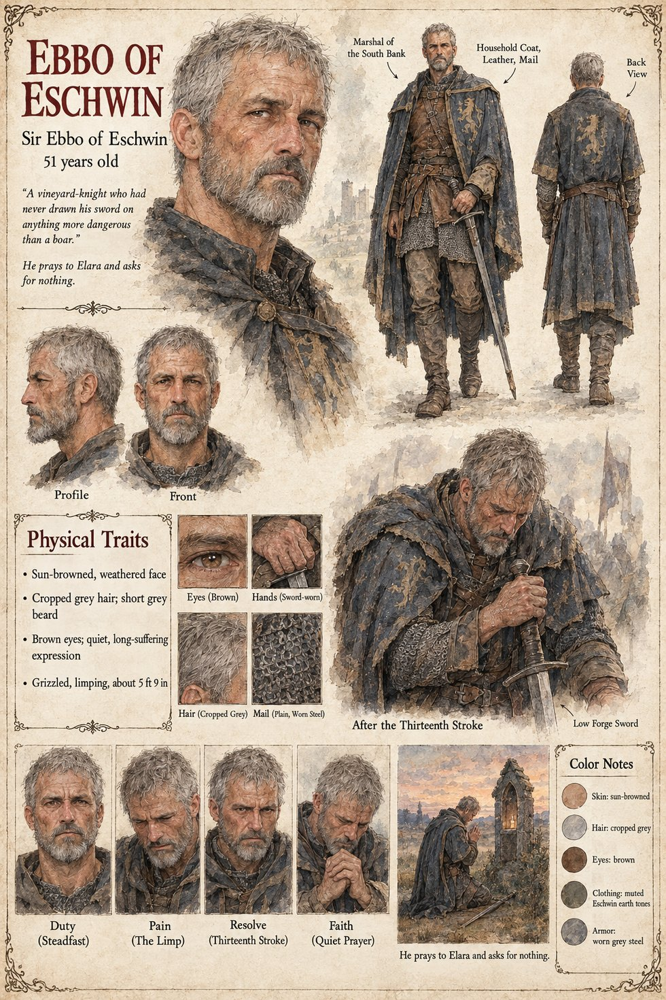

Ebbo of Eschwin
Sir Ebbo of Eschwin · Marshal of the South Bank · 51 years old
A grizzled, limping knight of fifty-one, about 5 ft 9 in, sun-browned and weathered, with cropped grey hair, a short grey beard, brown eyes and a quiet, long-suffering expression, in a household coat over leather and plain worn mail. The sheet gives him as Sir Ebbo of Eschwin and Marshal of the South Bank, and the publication notes make him her father's marshal on the south bank for twenty years and the Countess Adalgund's champion at the Ordeal. Eschwin is the county of the south bank, hers, and the household coat is hers. Its pull-quote, A vineyard-knight who had never drawn his sword on anything more dangerous than a boar, is the sheet's own line; Eschwin is the county where, on Brun's page, the vines come down to the river.
Its two scenes are devotional. After the Thirteenth Stroke draws him bowed over a sword set point-down before him, both hands on the hilt and his brow almost on his knuckles, with banners behind and the label Low Forge Sword; the thirteen strokes are the Ordeal's own: in Chapter 13 he crosses blades thirteen times with Theodard of Lorrenne, the Duke's champion, while the Proof, on the other pages, is three. He prays to Elara and asks for nothing draws him kneeling at a wayside shrine at dusk, a lit niche in the stone and his sword on the ground. Elara is the Mother of the Threefold Crown, goddess of earth, birth, harvest and hearth.
His expression panels run Duty (Steadfast), Pain (The Limp), Resolve (Thirteenth Stroke) and Faith (Quiet Prayer). Written from the sheet, from what the other Case 4181 pages already say, and from the character notes in the case's publication-prep file; the manuscript itself was not to hand. His age of 51, grizzled limping build, sun-browned face, cropped grey hair, sword-worn hands and worn grey steel mail are the sheet's own.
“A vineyard-knight who had never drawn his sword on anything more dangerous than a boar.”
Appears In

Related Subjects


Related Records

Over the black oak Altar of Oaths Theodard of Lorrenne, the Duke's champion, and Ebbo of Eschwin, the Countess's, cross blades flat to flat through thirteen strokes while Rothari holds the Book of the Law open at arm's length; Adalgund stands at the altar steps, Ansbert by the north pillar in his blue sash, and far down the nave, in the porch between the two pages who hold the west doors open, the Duke never takes his eyes from the doorway.